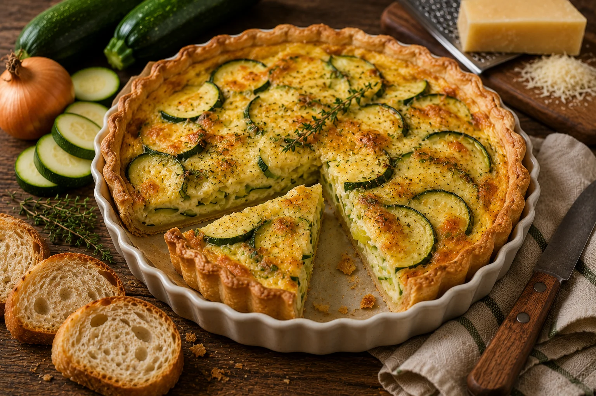

Tarte salée à la courgette
Une tarte salée maison, fondante et dorée, préparée avec des courgettes, une pâte brisée salée et un appareil crémeux aux œufs.
Les courgettes sont précuites pour éviter de détremper la pâte et pour concentrer leur goût. La base œufs-crème donne une garniture fondante et facile à adapter.

⚖️ Adapter les quantités
🧺 Ingrédients avec quantités
Principaux
- 1 pièce — pâte brisée salée
- 650 g — courgettes
Secondaires
- 3 pièces — œufs
- 200 ml — crème liquide ou semi-épaisse
- 1 pièce — oignon
- 90 g — fromage râpé
Optionnels
- 1 c. à café — moutarde
- 1 c. à soupe — huile d’olive
- 1 pincée — herbes de Provence
- 1 pincée — sel, poivre ou muscade
👩🍳 Préparation détaillée
- Préchauffer le four à 180 °C. Étaler la pâte brisée salée dans un moule à tarte, piquer le fond avec une fourchette et réserver au frais.
- Laver les courgettes, retirer les extrémités puis les couper en fines rondelles ou en petits dés. Émincer l’oignon.
- Faire revenir l’oignon et les courgettes 8 à 10 minutes dans une poêle avec un filet d’huile d’olive. Les légumes doivent commencer à s’attendrir et perdre une partie de leur eau.
- Dans un saladier, battre les œufs avec la crème. Ajouter le fromage râpé, les herbes, le poivre et une pincée de sel. Ajouter éventuellement un peu de muscade.
- Répartir les courgettes précuites sur le fond de tarte. Verser l’appareil œufs-crème par-dessus et lisser légèrement.
- Enfourner 30 à 35 minutes, jusqu’à ce que la tarte soit prise, dorée et légèrement gratinée. Laisser tiédir 5 minutes avant de couper.
💡 Astuce anti-gaspi
Cette tarte est idéale pour utiliser des courgettes un peu fatiguées. Si elles rendent beaucoup d’eau, les précuire plus longtemps et les égoutter avant de garnir la pâte. Les restes se mangent froids le lendemain ou se réchauffent doucement au four.
🔁 Variantes possibles
Ajouter des tomates, remplacer une partie des courgettes par des aubergines, intégrer des poireaux fondus, du jambon, des lardons, du thon, du saumon fumé ou des restes de poulet. Pour une version plus fromagère, ajouter chèvre, feta, comté ou parmesan. Il suffit souvent de regarder ce qui reste dans le frigo.
🧭 Repères alimentaires
Ces repères sont indicatifs. Vérifiez les étiquettes, les traces éventuelles et les consignes propres aux produits utilisés.
Conservation : À conserver 24 h au réfrigérateur dans une boîte fermée.
Réchauffage : À réchauffer 8 à 10 minutes au four à 160 °C, ou à déguster froid.
📊 Valeurs nutritionnelles estimées
Estimation indicative et non officielle. Les valeurs nutritionnelles et le Nutri-Score estimé sont calculés à partir des quantités de référence, selon le nouvel algorithme Nutri-Score applicable en France depuis mars 2025. Ils peuvent varier selon les marques, les portions, les substitutions et les méthodes de cuisson. Ils ne remplacent ni les étiquettes des produits ni un avis médical ou diététique.
Non officiel
Score algorithmique estimé : 4 point(s) — nouvel algorithme 2025.
| Valeur | Par portion | Pour 100 g |
|---|---|---|
| Énergie | 2125 kJ / 508 kcal | 720 kJ / 172 kcal |
| Protéines | 17 g | 5.8 g |
| Glucides | 40 g | 13.5 g |
| dont sucres | 5 g | 1.7 g |
| Lipides | 32 g | 10.8 g |
| dont saturés | 14 g | 4.7 g |
| Fibres | 4.5 g | 1.5 g |
| Sel | 1.1 g | 0.4 g |
📱 QR code
QR code vers la fiche en ligne.
https://recettesducoeur.github.io/recettes/20260709-013.html
Le bouton Imprimer conserve les portions et quantités actuellement affichées. Le PDF correspond à la recette de référence.